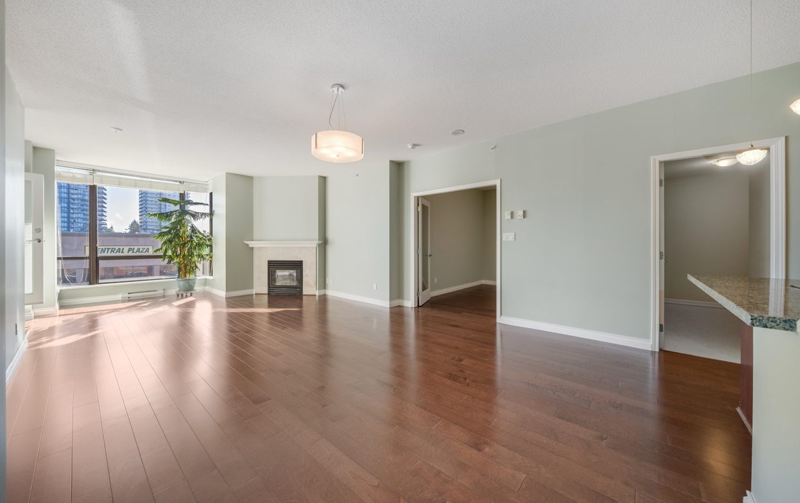
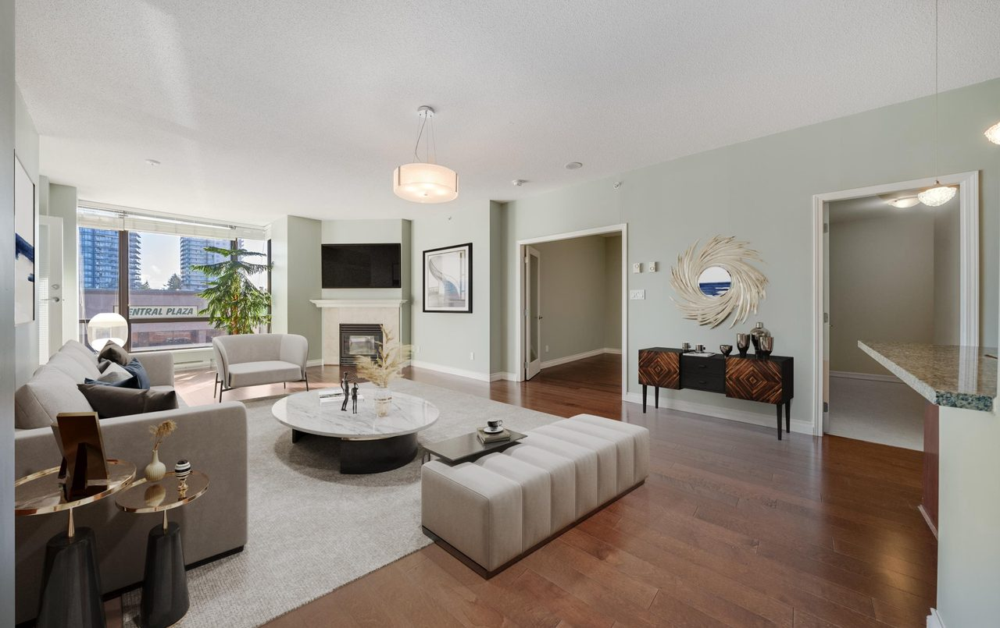

Home › Photo to Video › Transition
How to morph one photo into another on iPhone
Give the app a start frame and an end frame, describe what should happen between them, and AI generates the motion that connects the two — not a cross-fade, but frames that did not exist before. In the Photo to Video app for iPhone this is Transition mode, and it takes about a minute.

Steps
- Open Transition mode. In Photo to Video, go to Modes and choose Transition.
- Add two frames. Pick the photo the clip should begin on, then the one it should end on.
- Describe the change. For example, “she turns to face the camera as the season shifts to winter.” The prompt is what separates a morph from a movement.
- Pick a model, length and resolution. Seven models support this mode; see the table below.
- Generate and save. Save the finished clip to your camera roll.
What it supports
| Input | Two images — a first and a last frame |
|---|---|
| Output | Video, 480p to 4K depending on model |
| Length | 2–16 seconds depending on model |
| Models | Seedance 1.0 Pro (default), Seedance 2.0, Kling 3, Veo 3.1, Wan 2.7, Vidu Q3, Hailuo-02 |
| Prompt | Required — it describes the change between the frames |
| Platform | iPhone (iOS). No Android or web version. |
| Pricing | Credits per second of output, by model. No subscription. |
Which model to use
Seedance 1.0 Pro is the default and the cheapest per second, with 2–12 second clips up to 1080p — the right starting point for most transitions. Veo 3.1 is the only model here that outputs 4K, at fixed 4, 6 or 8 seconds. Vidu Q3 allows the longest clips, up to 16 seconds. Kling 3 is 1080p-only and costs roughly twice the default per second, but handles human motion distinctively well.
Getting a better result
- Keep the two frames close in framing and lighting. The further apart they are, the more the result reads as a stylised morph instead of real movement.
- Describe motion, not appearance. “Turns her head and smiles” gives the model something to animate; “beautiful portrait” does not.
- Start short. A 4-second clip costs a fraction of a 12-second one and tells you whether the prompt is working.
- If a model refuses the images, try another — each has its own content rules, and switching costs nothing.
A worked example: staging an empty room
A real estate listing needs the room to feel lived in, and reshooting a staged unit is not always possible. Here the two frames are the same room — one empty, one virtually staged — and Transition generates the furniture appearing rather than cutting between the photos. Both frames and the clip below are unretouched output.


Prompt used the empty room fills with furniture, camera holds still, natural daylight unchanged
What people use it for
A before and after you want as one continuous shot
Renovations, haircuts, fitness progress, a repaint. The two frames give the endpoints; the prompt decides whether it reads as a reveal or a morph.
Prompt the room transforms as the camera holds still, old furniture dissolving into the new layout
The same place in two seasons or times of day
Shoot from roughly the same spot and the result looks like a timelapse you never shot.
Prompt the scene shifts from summer afternoon to winter dusk, snow gathering, lights coming on
Two outfits, two colourways, two product variants
Useful in retail where a side-by-side would be flat. Keep the pose and framing identical between the two frames.
Prompt the jacket changes from black to tan, she stays in the same pose
A character turning to face you
First frame in profile, last frame to camera. Kling 3 handles this most convincingly.
Prompt she turns her head toward the camera and smiles
Where it struggles
Two images that disagree on framing, lighting or subject give a stylised morph rather than movement — occasionally interesting, rarely what you asked for. It cannot invent a middle it has no basis for: endpoints that imply a cut will look like a cut.
Questions
Can AI create the frames between two photos?
Yes. Transition mode generates the motion connecting a start and end frame, rather than cross-fading between the two images.
How long can a transition clip be?
It depends on the model: Seedance 1.0 Pro covers 2–12 seconds, Wan 2.7 up to 15, and Vidu Q3 up to 16. Hailuo-02 offers fixed 6 or 10 second clips.
Do the two photos have to be similar?
No, but the closer they are in subject, framing and lighting, the more believable the motion. Two unrelated images produce a stylised morph.
Can it output 4K?
Yes, with Veo 3.1, at 4, 6 or 8 seconds. The other models top out at 1080p.
What does a transition cost?
Credits are charged per second and vary by model, so a short clip on the default model costs the least. There is no subscription — credit packs are bought only when you generate.